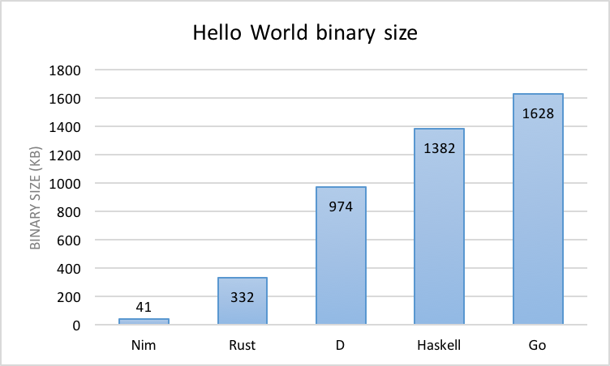

class: center, middle <h1 style="color: blue">Nim Introduce</h1> <h3 style="color: black">Sangho Ahn</h3> --- # Contents - Simple History - language design - Advantages - Disadvantages --- class: center,middle <h1 style="color: brown">Simple History</h1> --- - ###Initial Development :Nim`s initial development begin in 2005 by Andreas Rumpf -- - ###First apperance : in 2008, a version of the compiler written in Nim was released -- - ###version : The language was officially renamed from Nimrod to Nim with the release of version 0.10.2 in December 2014 // Now version is 0.19.0 --- class: center,middle <h1 style="color: purple">languge design</h1> --- ### The syntax of Nim is similar to python -- #### in details -- - C++ : Overloading,generic -- - Python : Off-side rule -- - C# : Async / await , lambda -- - Ada : subrange types,distinct type, sage variants / case objects -- - Other : Modula-3 , Object Pasc;a , GO , Oberon , Lisp --- class: center,middle <h1 style="color: green">Advantages</h1> --- <h2 style="color: navy"> 1 .Intuitive and clean syntax</h2> -- #### Choose from a deferred RC'ing garbage collector that is fast, incremental and pauseless; or a soft real-time garbage collector that is deterministic allowing you to specify its max pause time; and many others. -- - Indentation significant syntax - Multiple constructs inspired by Python - Multi-line lambdas - Oberon-inspired visibility markers - Pascal-inspired type sections for leaner definitions --- <h2 style="color: navy">2 .Support for multiple operating systems</h2> -- <h2 style="color: navy">3 . Native performance with state of the art optimisations</h2> -- - By compiling to C, Nim is able to take advantage of many features offered by modern C compilers. -- class: middle,center  --- <h2 style="color: navy">4 . Javascript compilation</h2> -- - Nim includes a first-class JavaScript backend so you can target the client and server effortlessly at the same time. --- class: middle,center <h2 style="color: navy">5. Decentralised package management.</h2> -- #### The Nim package manager is called Nimble. Packages are distributed via Git and Mercurial repositories, and tags are queried remotely to determine version information. -- #### Packages are defined using a specially formatted .nimble file that is evaluated by the Nim compiler. This means that it supports a large subset of the Nim programming language, allowing various powerful features including the ability to determine the OS and specify external dependencies. --- class: center, middle <h1 style="color: red">DisAdvantages</h1> --- <h2 style="color: tomato">Few users</h2> - Few users -> It's hard to learn. - Few users -> (I do not know if I can use it when I work.) - Few users -> Low version - Few users ! --- class:middle,center <h1 style='color: royalblue'>Thank you!</h1>